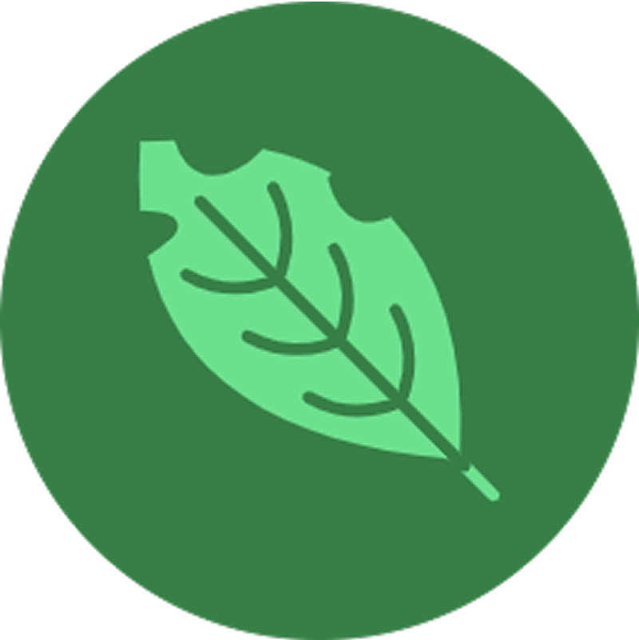
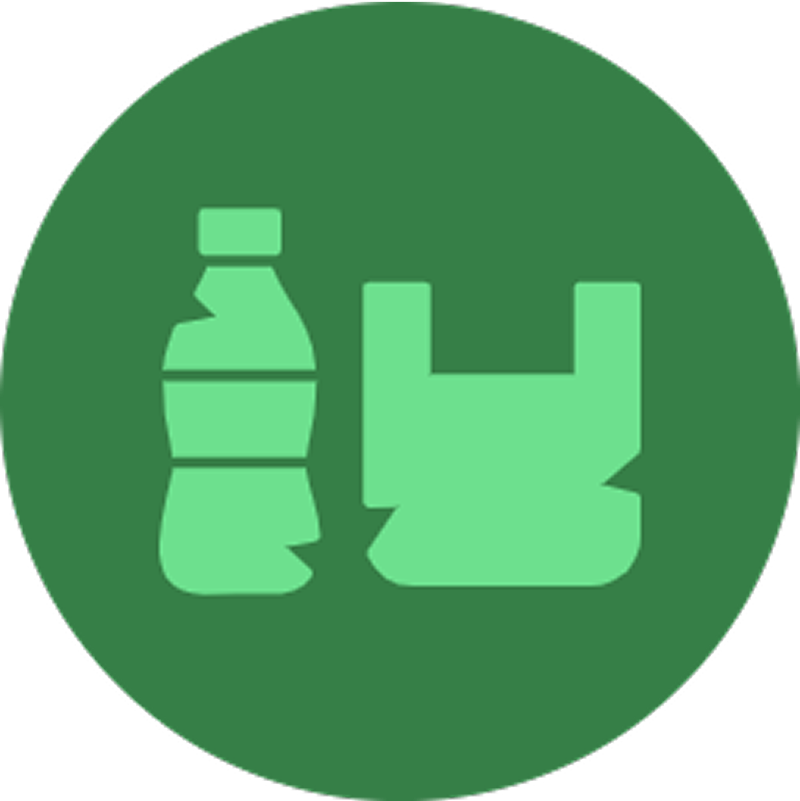
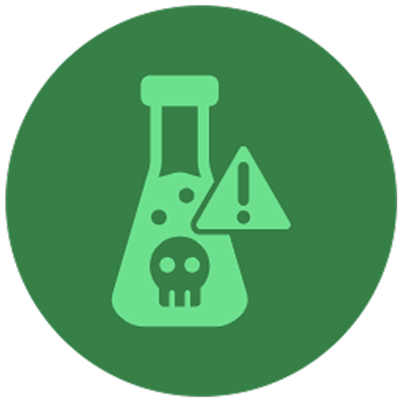
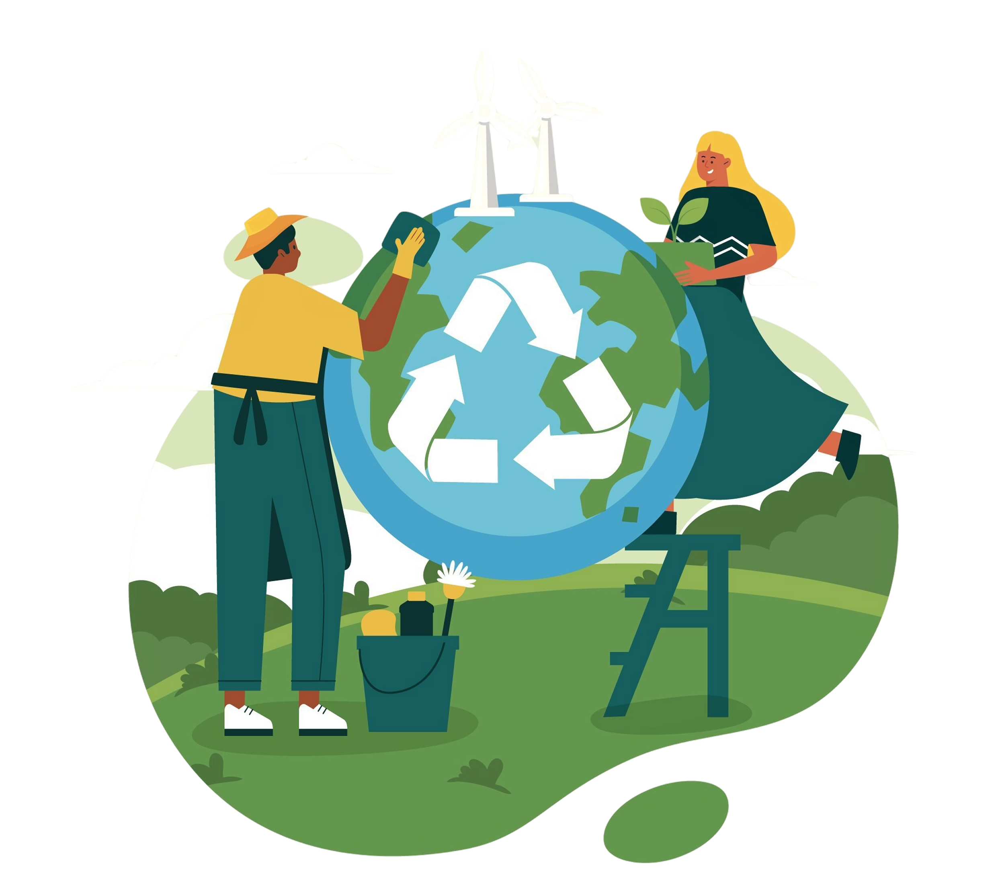

Mulai belajar, Ubah kebiasaan!

Kenapa Kita Harus Peduli dengan Sampah?
Sampah yang tidak terkelola dengan baik dapat mencemari lingkungan, mengganggu kesehatan, dan menghilangkan peluang ekonomi.
Mengurangi Polusi & Menjaga Kebersihan
Dengan memilah dan mendaur ulang sampah, kita dapat mencegah pencemaran udara, tanah, dan air. Pengelolaan sampah yang baik juga membantu menjaga kesehatan dan keseimbangan ekosistem. Lingkungan yang bersih memberikan udara segar, air jernih, dan tanah subur untuk masa depan yang lebih sehat.
Mengurangi Polusi & Menjaga Kebersihan
Dengan memilah dan mendaur ulang sampah, kita dapat mencegah pencemaran udara, tanah, dan air. Pengelolaan sampah yang baik juga membantu menjaga kesehatan dan keseimbangan ekosistem. Lingkungan yang bersih memberikan udara segar, air jernih, dan tanah subur untuk masa depan yang lebih sehat.
Mengurangi Polusi & Menjaga Kebersihan
Dengan memilah dan mendaur ulang sampah, kita dapat mencegah pencemaran udara, tanah, dan air. Pengelolaan sampah yang baik juga membantu menjaga kesehatan dan keseimbangan ekosistem. Lingkungan yang bersih memberikan udara segar, air jernih, dan tanah subur untuk masa depan yang lebih sehat.
Panduan Mudah Memilah Sampah
Pisahkan sampah dengan benar untuk mendukung daur ulang dan menjaga lingkungan tetap bersih!

Sampah organik
Sisa makanan, daun, dan bahan alami lainnya.

Sampah Anorganik
Sisa makanan, daun, dan bahan alami lainnya.

Sampah Nonorganik
Sisa makanan, daun, dan bahan alami lainnya.
Manfaat Daur Ulang Untuk Lingkungan Ekonomi
Kurangi limbah, hemat energi, dan ciptakan peluang ekonomi dengan daur ulang!

Saatnya Beraksi! Jadilah Agen Perubahan!
Mari bersama ciptakan lingkungan yang lebih bersih dan sehat. Mulai dari diri sendiri, ajak keluarga, dan sebarkan kesadaran!